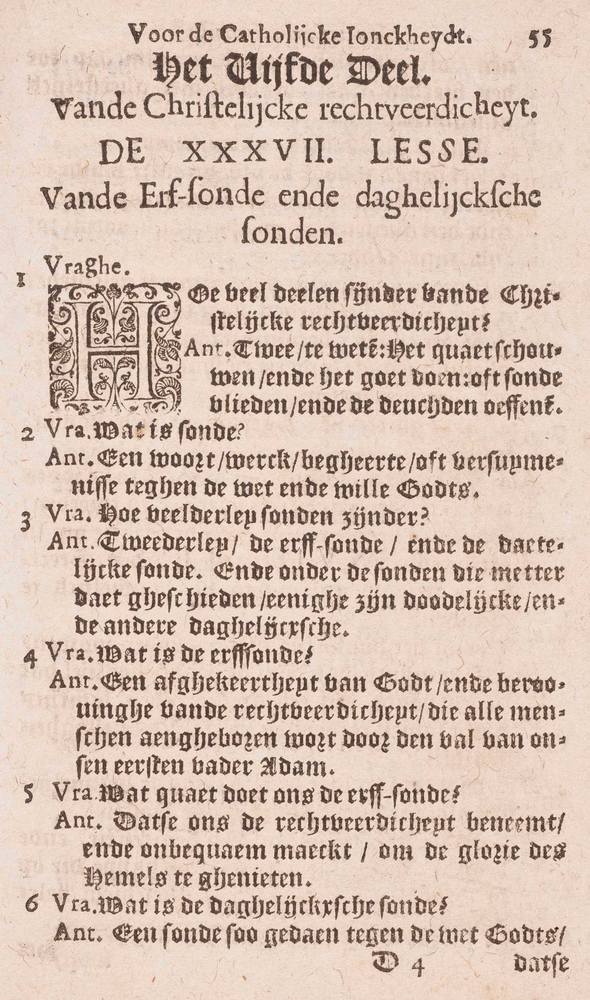
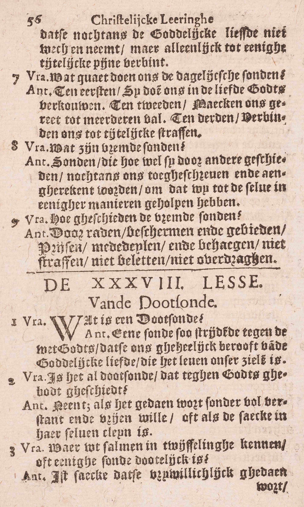
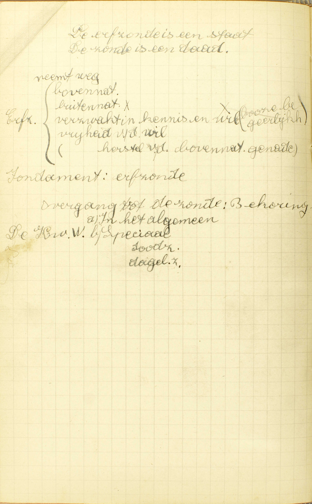

BEKNOPTE VERKLARING
van de
MECHELSE CATECHISMUS
ten gebruike van het middelbaar onderwijs
VIJFDE DEEL
–
ZEVEN EN DERTIGSTE LES
Van de erfzonde en de dadelijke zonde
| Natuur van de Christelijke Rechtvaardigheid | Hoeveel delen zijn er van de Christelijke Reehtvaardigheid? | |||||||||
| De Zonde | Natuur | Wat is zonde? | ||||||||
| Verdeling | De erfzonde | Wat is de erfzonde? | ||||||||
| Wat kwaad doet ons de erfzonde? | ||||||||||
| De dadelijke zonden | Doodzonden | Wat zijn vreemde zonden? | ||||||||
| Dagelijkse zonden | Wat is de dagelijkse zonde? | |||||||||
| Wat kwaad doen ons de dagelijkse zonden? | Hoe geschieden de vreemde zonden? | |||||||||
  Van de erfzonde en de dadelijke zonde
De Catechismus heeft ons in de drie eerste delen geleerd, wat er vereist is om in de dienst van God te treden en er in te volharden, en in het vierde deel, welke middelen door Christus ingesteld wij moeten gebruiken om tot deze dienst de noodzakelijke krachten en hoedanigheden te hebben. Nu in ‘t vijfde en laatste deel zal hij ons leren, wat iemand die door het Geloof, de Hoop en de Liefde in de dienst van God is getreden, en door de Sacramenten de tot die dienst vereiste krachten en hoedanigheden heeft bekomen, te doen en te vluchten heeft, om God volgens Christus’ leer rechtvaardig, juist zó gelijk het behoort, metterdaad te dienen, en welk het lot van de goede en van de slechte dienaars zal zijn. Hij stelt ons eerst voor, dat wij, om, volgens Christus’ leer, God te dienen het kwaad moeten vluchten en het goed doen, en hij legt beide deze punten uit: in de 37ᵉ en 38ᵉ les leert hij ons de zonde en haar verdeling kennen; en in de 39ᵉ en 40ᵉ spreekt hij van de deugd en van de goede werken die er uit voortvloeien. Ten slotte in de 41ᵉ les handelt hij over het lot van de goede en van de slechte dienaars van God. — Dit deel draagt de naam van Christelijke Rechtvaardigheid, omdat het de staat en het einde beschrijft van een dienaar die God rechtvaardig volgens Christus’ leer dient.
Hoeveel delen zijn er van de Christelijke Reehtvaardigheid?
Twee, te weten: het kwaad schuwen en het goed doen, of de zonden vluchten en de deugden oefenen
V. Waarin is de Christelijke Rechtvaardigheid of de staat waarin men, volgens Christus’ leer, God wel dient en Hem behaagt, eigenlijk gelegen?
A. Zij bestaat uit twee delen, te weten: 1° het kwaad schuwen of de zonden vluchten: laten wat Christus verboden heeft, en 2° het goed doen of de deugden oefenen: doen wat Christus geboden, en zelfs wat Hij uitsluitend aangeprezen heeft.
Men bemerke dat niet doen wat Christus geboden heeft, een zonde uitmaakt, zodat het tweede deel van de christelijke rechtvaardigheid reeds in het eerste begrepen is; doch als men deze uitdrukkingen het kwaad schuwen en het goed doen tegenover elkander stelt, dan verstaat men door de ene, laten wat verboden, en door de andere, doen wat geboden is. Daarenboven het goed doen bevat niet alleen hetgene geboden is, maar ook nog al hetgene enkel is aangeprezen.
Wat is zonde?
Een woord, werk, begeerte of verzuimenis tegen de wet en de wil Gods
A. Zonde is een woord, zoals achterklap, blasfemie, — werk: een uitwendige handeling, b. v‚ een diefstal, een doodslag, — begeerte: een wil van iets te doen, een inwendige goedkeuring, een enkel welbehagen, een enkel behouden van gedachten, of verzuimenis: een nalaten van iets te doen: — dus allerhande daad van een redelijk schepsel, want al wat een redelijk schepsel kan doen, komt op een van die dingen uit; — tegen de wet en de wil Gods: tegen de geboden rechtstreeks door God, of tegen die door de H. Kerk of door andere wettige overheden voorgeschreven; want het is Gods wil dat wij ook deze geboden onderhouden.
Opdat nu een zonde ons kunne aangerekend worden, moet men ze wetens en willens bedreven hebben, d. i, voor de ogenblik waarlijk geweten of gemeend hebben, dat hetgene men deed, zonde was, en desniettegenstaande met de wil in dat gekende of gemeende kwaad toegestemd hebben; ’t is immers door ons verstand en onze wil dat wij mensen zijn, en bijgevolg kan er ons, als mensen, geen zonde toegeschreven worden, indien wij ze niet kennen en willen.
Wie door zijn schuld de zonden niet kent die hij bedrijft, maakt zich, door die vrijwillige onwetendheid, ongetwijfeld schuldig aan al de zonden die hij enigszins voorziet, en hij maakt er zich schuldig aan op de ogenblik zelf dat hij ze voorziet; wil men immers de wet niet kennen die men te volgen heeft, dan wil men die wet overtreden.
Wie een daad verricht, twijfelende of hij zich aan zonde schuldig maakt, die maakt zich schuldig aan de zonde waar hij aan twijfelt, vermits hij de daad wil plegen, zelfs indien zij zonde is. Twijfelt gij dus of gij iets moogt doen of niet, gij moet, vooraleer te handelen, die twijfel afleggen door ’t bijbrengen van gegronde redenen, of, zo gij hiertoe niet geleerd genoeg zijt, door anderen te raadplegen, indien gij daartoe gelegenheid hebt. Het geldt hier, dat spreekt van zelf, gegronde twijfels, en niet bevreesdheden van nauwgezette gewetens; op zulke immers moet niet gelet worden.
Een woord, werk of begeerte of verzuimenis, die niet tegen Gods wet en wil, maar enkel tegen Gods raden, tegen hetgeen volgens Christus’ leer in de omstandigheden waarin men zich bevindt wezenlijk raadzaam is, maakt geen zonde maar een onvolmaaktheid uit. (Zie 2ᵉ les, 2ᵉ vr.)
Hoeveel soorten zonden zijn er?
Twee soorten: de erfzonde en de dadelijke zonde; en onder de zonden, die met de daad geschieden, zijn enige dodelijke en andere dagelijkse
A. De zonden zijn tweeërlei of worden in twee hoofdsoorten verdeeld: de erfzonde: de zonde die wij, niet door persoonlijke daad bedreven, maar van onze eersten vader Adam geërfd hebben; — en de dadelijke zonde: de zonde waaraan wij ons door eigen daad schuldig maken; en onder de zonden die met de daad geschieden of onder de dadelijke zonden — zijn enige dodelijke: zijn er enige die ons van het geestelijk leven van de ziel beroven en zo ons doden, en andere dagelijkse: andere die de dood van het geestelijk leven niet veroorzaken, maar ons enkel in de liefde Gods doen verflauwen, ten gevolge van de menselijke krankheid dik wijls geschieden, en daarom dagelijkse zonden genoemd worden.
Wat is de erfzonde?
Een afgekeerdheid van God en beroving van de rechtvaardigheid, die alle mensen aangeboren wordt door de val van onze eerste vader Adam
A. De erfzonde is een afgekeerdheid van God: een staat van ongunst bij God, voortkomende uit de beroving van de rechtvaardigheid: van de heiligmakende genade die iedereen, volgens Gods instelling en wil, zou moeten bezitten, — die alle mensen: welke afgekeerdheid en beroving alle nakomelingen van Adam die ooit geweest zijn en zijn zullen, behalve Jezus Christus en de H. Maagd Maria — aangeboren wordt: van ’t begin van hun leven aankleeft door de val van onze eersten vader Adam: ten gevolge van de zonde die Adam in het aards Paradijs bedreven heeft met van de verboden vrucht te eten. Als stamvader van geheel het menselijk geslacht, had Adam de heiligmakende genade bekomen niet alleen voor zichzelf, maar ook voor al zijn afstammelingen; doch op voorwaarde dat hij Gods gebod zou onderhouden met van de verbodene vrucht niet te eten. Hij overtrad echter dit goddelijk gebod, en verloor zo de heiligmakende genade voor zichzelf en voor al zijn nakomelingen.
Niets belette God ons allen, om wille van Adams zonde, van de heiligmakende genade te beroven, daar deze een bovennatuurlijke en dus gans vrije gave is, die God naar believen kan weigeren of geven. Zelfs betaamde het dat, in ’t begin van de wereld, het bewaren of het verliezen dier genade van de wil van ons stamvaders afhing, daar zij, vóór de zonde, behoorde vergezeld te zijn van deze vier gaven: de onsterfelijkheid en de vrijdom van de begeerlijkheid van het lichaam, van de onwetendheid en van de ellenden dezes levens; welnu, de orde ware in de wereld onmogelijk geweest, hadden enige mensen, bij uitsluiting van anderen, deze gaven genoten.
Al is de beroving van de oorspronkelijke rechtvaardigheid met de daaruitvloeiende afgekeerdheid van God geen woord, werk, begeerte of verzuimenis tegen de wet en de wil Gods, toch wordt zij met recht zonde genoemd, vermits onder die naam niet uitsluitend de zondige daad komt, maar ook de staat die er in ons opzichtens God uit volgt, en dat die afgekeerdheid en beroving juist de staat is waartoe Adam’s val ons opzichtens God gebracht heeft. Men zegt immers zowel van iemand die gezondigd heeft: die is in zonde, als men zegt: die doet zonde, van iemand die nu metterdaad een zonde bedrijft.
Wat kwaad doet ons de erfzonde?
Dat zij ons de rechtvaardigheid beneemt en onbekwaam maakt om de glorie van de hemel te genieten
 A. De erfzonde doet ons een dubbel kwaad of nadeel:
1° Dat zij ons de rechtvaardigheid beneemt, dat zij ons berooft van de heiligmakende genade, waardoor wij aangenomene kinderen Gods zijn, en van de vier buitennatuurlijke gaven die er in ’t Paradijs mee gepaard gingen;’t is immers in die beroving van de oorspronkelijke rechtvaardigheid dat de erfzonde gelegen is. Door het verlies van al die gaven heeft onze ziel vier wonden ontvangen: de verblindheid in het verstand, de boosheid in de wil, de genegenheid tot het kwaad en de krankheid tot het goed.
2° Dat zij ons onbekwaam maakt om de glorie van de hemel, die in het aanschouwen van God bestaat, te genieten; dit geluk immers is de beloning van Gods aangenomene kinderen, en ‘t is alleen door de heiligmakende genade, waar de erfzonde ons van berooft, dat wij kinderen Gods zijn.
Wat is de dagelijkse zonde?
Een zonde zó gedaan tegen de wet Gods, dat zij nochtans de goddelijke liefde niet wegneemt, maar uitsluitend tot enige tijdelijke pijn verbindt
A. De dagelijkse zonde is een zonde — zó gedaan tegen de wet Gods: zó wetens en willens tegen de geboden van God of van andere wettige overheden bedreven — dat zij nochtans de goddelijke liefde niet wegneemt: dat zij, hoewel tegen God strijdende en Hem vergrammende, nochtans de vriendschap met Hem niet breekt, noch ons van de heiligmakende genade berooft, noch bijgevolg, de eeuwige straf van de hel medebrengt die slechts bestemd is voor degenen die buiten Gods liefde sterven (15ᵉ les, 8ᵉ vr.), maar uitsluitend verbindt — tot enige tijdelijke pijn: tot een pijn van bepaalden tijd hier op de aarde of hiernamaals in het vagevuur te lijden.
Dat er zonden zijn die de goddelijke liefde niet wegnemen, is gemakkelijk om begrijpen; de vriendschap met iemand wordt niet door allerhande, maar slechts door grote, door volkomen beledigingen verbroken; welnu er zijn noodzakelijk zonden die niet volkomen zijn, en zo zijn er noodzakelijk dagelijkse zonden.
Wat kwaad doen ons de dagelijkse zonden?
Ten eerste, zij doen ons in de liefde Gods verflauwen; ten tweede, zij maken ons gereed tot meerdere val; ten derde, zij verbinden ons tot tijdelijke straffen
A. Zij doen ons een drievoudig kwaad:
Ten eerste, zij doen ons in de liefde Gods verflauwen: zij verminderen in ons niet de graad van de liefde of van de heiligmakende genade, maar wel, om reden van de oneer God aangedaan, de dadelijke genaden en diensvolgens de levendigheid, de vurigheid van de liefde, waaruit de goede werken voortspruiten, en zo beletten zij ons onrechtstreeks van door goede werken en het ontvangen van de HH. Sacramenten grote vermeerdering van de heiligmakende genade te bekomen.
Ten tweede, zij maken ons gereed tot meerderen val: om menigvuldiger en groter zonden, zowel dodelijke als dagelijkse, te bedrijven, en dat evenzeer met de vurigheid van onze liefde te verminderen als met onze neiging tot het kwaad te vermeerderen.
Ten derde, zij verbinden ons tot tijdelijke straffen. (v. 6.) Aan een volkomen zonde komt een volkomen straf, namelijk een eeuwige toe; aan een onvolkomen zonde past een onvolkomen straf, namelijk, een tijdelijke. Zulke straf ondergingen Mozes en de huisvrouw van Loth, alsook de Joden die te Bethsames de dood stierven om de ark aanschouwd te hebben.
Wat zijn vreemde zonden?
Zonden die, hoewel zij door anderen geschieden, nochtans ons toegeschreven en aangerekend worden, omdat wij tot dezelve in enige manier geholpen hebben
A. Vreemde zonden zijn zonden: zondige woorden, werken, begeerten of verzuimenissen die, hoewel zij niet door ons zelf, maar door anderen geschieden, nochtans ons toegeschreven en aangerekend worden: nochtans van God als onze zonden aanzien worden en ons in zijn ogen waarlijk schuldig maken, omdat wij tot dezelve: tot het bedrijven dier zonden in enige manier geholpen hebben: enigszins medegewerkt hebben, hetzij met anderen tot die zonden te bewegen (medewerken in het werk van de ziel), hetzij met hen tot het bedrijven derzelve te helpen (medewerken in het werk van het lichaam), hetzij met ze niet te beletten (verzuimen van het werk van de ziel of van het lichaam te beletten), als wij er niet uitsluitend uit liefde, maar van ambtswege of uit hoofde van een contract toe gehouden waren. De zonden van anderen niet beletten als wij er slechts uit liefde toe verplicht zijn, dat maakt geen vreemde zonde, maar enkel een zonde tegen de liefde uit, omdat wij dan geen ware medeoorzaak van de bedreven zonde zijn. Vreemde zonde is b.v. een diefstal waar wij een ander toe bewogen of geholpen hebben, of waar wij ons niet tegen hebben verzet, wanneer wij er uit hoofde van ons ambt of van een contract toe verplicht waren. In de eerste manier van medewerken is er, boven de vreemde zonde, nog een zonde van rechtstreeksche ergernis; in de tweede en in de derde zal er, boven de vreemde zonde, nog een zonde van onrechtstreeksche ergernis zijn, als wij er iemand de gelegenheid door geven van te zondigen. (25ᵉ les, 1ᵉ v.)
De vreemde zonden worden zo genoemd, omdat wij ze niet door ons zelf, maar door anderen, door vreemden bedrijven. Zij kunnen, als blijkt, dodelijke of dagelijkse zonden zijn.
Daar de vreemde zonden ons wezenlijk aangerekend en toegeschreven worden, is het niet genoeg in de Biecht (wel te verstaan als er spraak is van doodzonden), te verklaren, dat men tot eens anders zonde medegewerkt heeft; men moet daarenboven zeggen tot welke zonde de medewerking verleend werd. Wij moeten immers in de Biecht verklaren, welke doodzonden wij gedaan hebben.
Hoe geschieden de vreemde zonden?
Door raden, beschermen en gebieden, prijzen, mededelen en behagen, niet straffen, niet beletten, niet overdragen
A. De zes eerste manieren bestaan in iets te doen, in dadelijk door woorden of werken tot de zonde mee te helpen: de drie laatste zijn gelegen in iets te verzuimen dat men moet doen.
1° Door raden: door iemand de eerste genegenheid tot het kwaad in te boezemen, of door deze reeds bestaande genegenheid te bevestigen. Zo zondigde Herodias toen zij haar dochter de afschuwelijken raad gaf van, tot prijs van haar kunst, het hoofd van de H. Joannes-Baptista te vragen.
2° Door beschermen: door iemand te verdedigen tegen degenen die hem van de zonde willen weerhouden, of door iemand in ’t bedrijven zelf van de zonde te beschutten.
3° Door gebieden: met iemand door zijn gezag, zijn macht of zijn invloed te dwingen iets zondigs te doen. Zo zondigde David, als hij zijn legeroverste Joah beval, Urias in het gevecht op de gevaarlijkste plaats te stellen en hem dan te verlaten.
4° Door prijzen: door de naaste tot zonde aan te lokken met het kwaad te loven en te verheffen, of met de deugd belachelijk en vernederdtelijk te maken.
5° Door mededelen: door mee te werken in een zondige daad, of deel te hebben in gestolen goed en zo in ’t onrechtvaardig bezitten of gebruiken daarvan mee te helpen.
6° Door behagen: door met zijn woorden, zijn tekenen, zijn lachen, zijn handelwijze of met zijn stem in een kiezing enig kwaad goed te keuren, en even iemand in zijn zonden te doen voortgaan, of hem het nodig gezag te geven om de zonde te bedrijven.
7° Door niet straffen: door niet te berispen en te straffen, als men daar niet alleen uit liefde, maar om reden van zijn ambt of van een contract toe verplicht is. Zo zondigde Heli met zijn schuldige kinderen niet te berispen.
8° Door niet beletten: door enig kwaad dat men wegens zijn ambt of wegens een contract of wegens zijn verplichting opzichtens het gemenebest moet tegenhouden, niet tegen te houden.
9° Door niet overdragen: door eens anders zonden aan degenen die ze moeten beletten of straffen, zoals ouders, oversten, zielenverzorgers, niet bekend te maken, als men, om dezelfde redens die verplichten het kwaad te beletten, daartoe gehouden is.
Door raden, gebieden, prijzen, behagen, en ook deels door beschermen werken wij met anderen mee in de werking van hun verstand; door mededelen en ook deels door beschermen werken wij met anderen mee in de werking van hun lichaam; en met niet te beletten, niet te straffen en niet over te dragen, als wij daartoe niet uitsluitend uit liefde maar uit rechtvaardigheid verplicht zijn, werken wij met anderen mee in de werking van hun verstand (door niet te straffen) of van hun lichaam (door niet te beletten) ‘t zij door ons zelf ’t zij door anderen aan wie wii de zaak moeten overdragen, opdat zij zouden straffen of beletten.
Men bemerke wel dat de verzuimenis, om een vreemde zonde uit te maken, tegen de rechtvaardigheid moet strijden, want streed zij uitsluitend tegen de Liefde, dan zou zij slechts een zonde van ergernis kunnen zijn. Daarom ook kan men uit hoofde van verzuimenis in het straffen, beletten of overdragen nooit verplicht zijn tot restitutie van de schade iemand tengevolge van onze verzuimenis onrechtvaardig toegebracht, wanneer die verzuimenis tegen de rechtvaardigheid niet strijdt; want in dit geval zou zij geen vreemde zonde uitmaken, en bijgevolg zou de onrechtvaardigheid door een ander bedreven, ons niet aangerekend worden. — Om door zonde tot restitutie verplicht te zijn, moet men immers iemand het zijne ontnomen hebben: men is nooit verplicht restitutie te doen van hetgene men iemand geweigerd heeft, wanneer men het hem enkel uit liefde verschuldigd was: zo moet men b.v. geen restitutie doen voor het weigeren van blijken van dankbaarheid, van een aalmoes of enige hulp enkel uit liefde gevorderd, van de waarheid te zeggen (wanneer immers men niet door een contract gehouden is de waarheid te verklaren en dat de leugentaal geen schade bijbrengt); want in al deze gevallen heeft men de naaste het zijne niet ontnomen, maar enkel hem van het onze niet gegeven, wat de liefde eiste.
VRAGEN
Zeg, met de woorden van de Catechismus, waarvan het vijfde deel handelt. — Leg die woorden uit. — Toon hoe dit vijfde deel met de vier eerste verbonden is. — Stel voor wat de Catechismus ons in dit vijfde deel zal leren.
Geef de zin van de vraag: Hoeveel delen zijn er van de Christelijke Rechtvaardigheid? — Zeg, met de Catechismus, uit hoeveel en uit welke delen de Christelijke Rechtvaardigheid bestaat. — Leg ze uit. — Zijn die twee delen wezenlijk van elkander onderscheiden?
Zeg, met de Catechismus, welke dingen zonde kunnen zijn; en leg die uit. — Zeg, in één woord, wat zonde kan zijn. — Zeg, met de Catechismus, wat er in die dingen vereist is tot een zonde. — Leg dat uit. — Wat is er vereist, opdat een zonde ons kunne aangerekend worden? — Leg het antwoord uit. — Geef er de reden van. — Wat is er te denken van de schuldigheid van degenen die, door hun schuld, de zonden niet kennen die zij bedrijven? — Zijn zij aan deze zonden schuldig, en zo ja, wanneer worden zij er schuldig aan? — Welke is de reden hiervan? — Zondigt diegene die iets doet, twijfelende of het zonde is; en zo ja, aan welke zonde maakt hij zich schuldig en waarom? — Hoe moet men dus handelen, als men twijfelt of iets zonde is? — Van welke twijfels is er hier spraak? — Wat is een onvolmaaktheid, en hoe verschilt zij van de zonde?
Geef, met de Catechismus, de hoofdverdeling van de zonden. — Leg deze verdeling uit, en geef tevens rekenschap van de namen. — Hoe verdeelt de Catechismus de dadelijke zonden? — Leg die verdeling uit, en geef rekenschap van de namen.
Waarin bestaat eerst en vooral, volgens de Catechismus, de erfzonde? — Leg het antwoord uit. — Van waar komt, volgens de Catechismus, die staat voort welke de erfzonde uitmaakt? — Verklaar uw antwoord. — Welk is, volgens de Catechismus, de oorsprong van die beroving, welke de erfzonde teweegbrengt? — Leg dit antwoord uit. — Wie is er, volgens de Catechismus, met de erfzonde besmet? — Leg dit uit. — Hoe en wanneer worden deze allen er mee besmet? — Toon hoe niets God belette, het bewaren van de heiligmakende genade van de wil van ons algemenen stamvaders te doen afhangen. — Toon hoe het zelfs betaamde, dat God zo de zaak schikte. — Hoe kan die staat van afgekeerdheid van God en beroving van de rechtvaardigheid, die de erfzonde uitmaakt, de naam van zonde dragen?
Verklaar de vraag: Wat kwaad doet ons de erfzonde? — Leg, met de Catechismus, welk dubbel kwaad de erfzonde ons doet, en leg het uit. — Geef rekenschap van het kwaad dat zij ons doet.
Is de dagelijkse zonde een ware zonde? — Bewijs het antwoord met de woorden van de Catechismus, en leg deze uit. — Zeg, met de Catechismus, hoeveel en welke dingen aan de dagelijkse zonden eigen zijn. — Verklaar deze. — Toon dat er dagelijkse zonden zijn, of dat niet alle zonden de goddelijke liefde wegnemen.
Welk drijdubbel kwaad doet ons de dagelijkse zonde? — Leg het uit. — Bewijs dat al dat kwaad er natuurlijk uit volgt.
Zeg, met de Catechismus, wat er eigen is aan de vreemde zonden, en waarop die eigenschap rust. — Leg de beide antwoorden uit. — Zeg, in ’t bijzonder, op welke manieren wij tot de zonde van anderen kunnen wezenlijk medewerken. — Werkt men ook wezenlijk tot de zonde van een ander mede, als men die zonde verzuimt te beletten, alhoewel men uit liefde, doch enkel uit die hoofde, daartoe verplicht is? — Geef rekenschap van uw antwoord. — Geef een voorbeeld van een vreemde zonde, en leg het uit. — Leg hun naam uit. — Is er in de vreemde zonden niet ook altijd een zonde van ergernis te vinden? — Zijn de vreemde zonden dodelijke of dagelijkse zonden? — Hoe moet men de vreemde zonden biechten?
Op hoeveel manieren geschieden de vreemde zonden? — Hoe kùnnen zij verdeeld worden? — Leg ieder van die manieren uit. — Hoe werken wij door ieder van die manieren in de zonde van anderen mede? — Wanneer zijn wij uit hoofde van verzuimenis tot restitutie verplicht? — Geef rekenschap van uw antwoord.